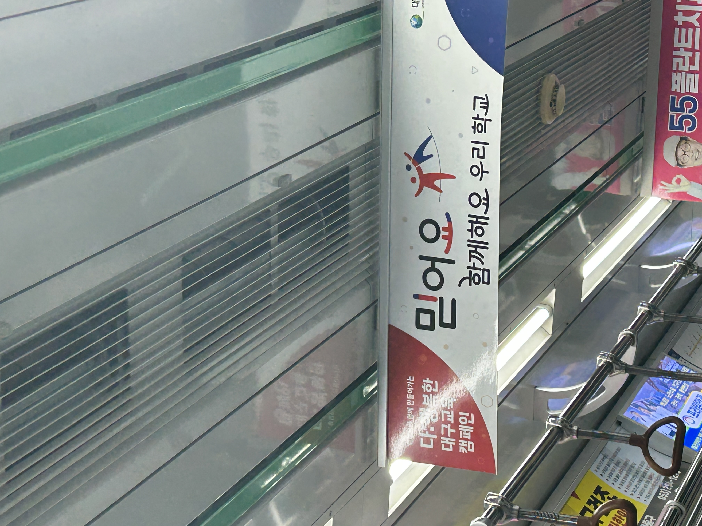
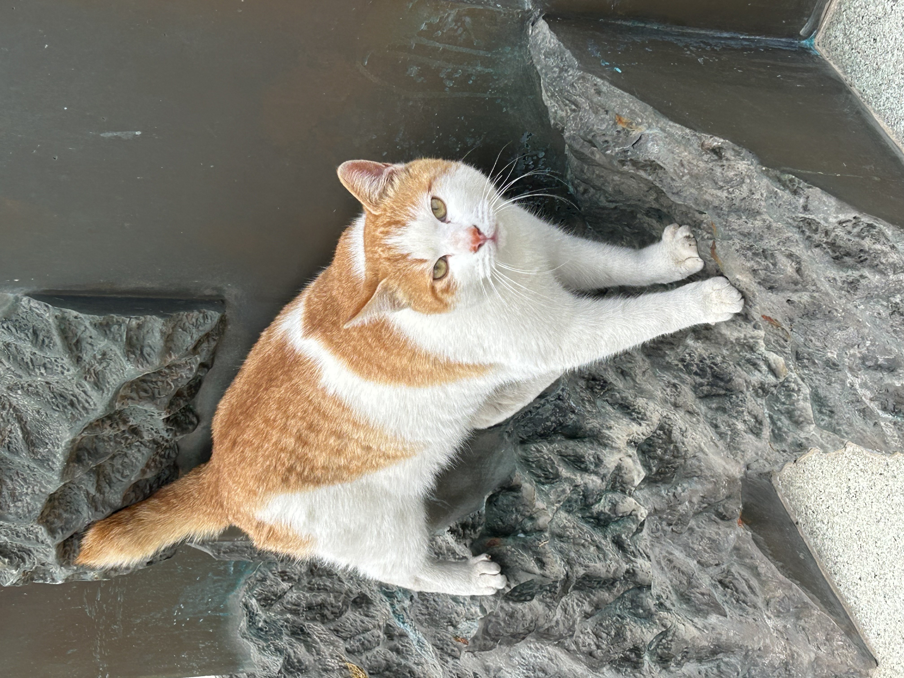
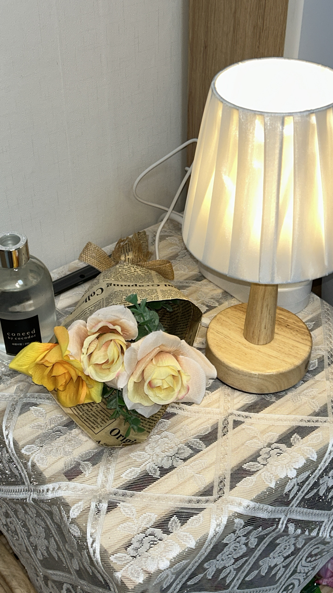
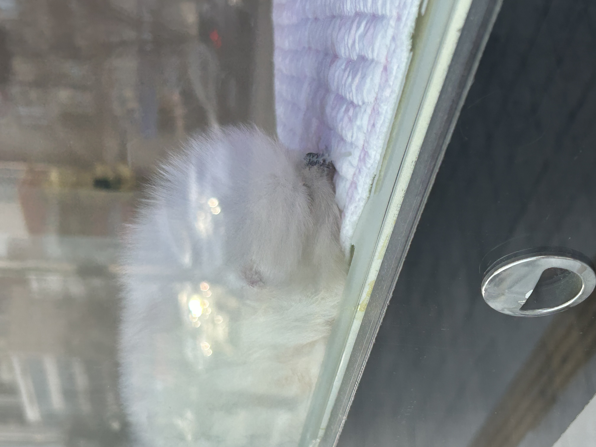
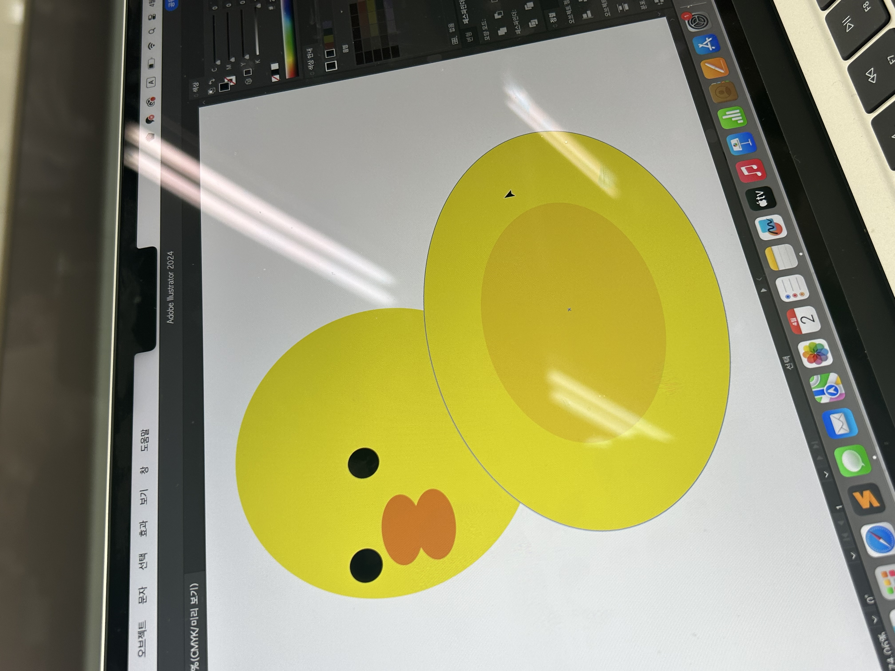
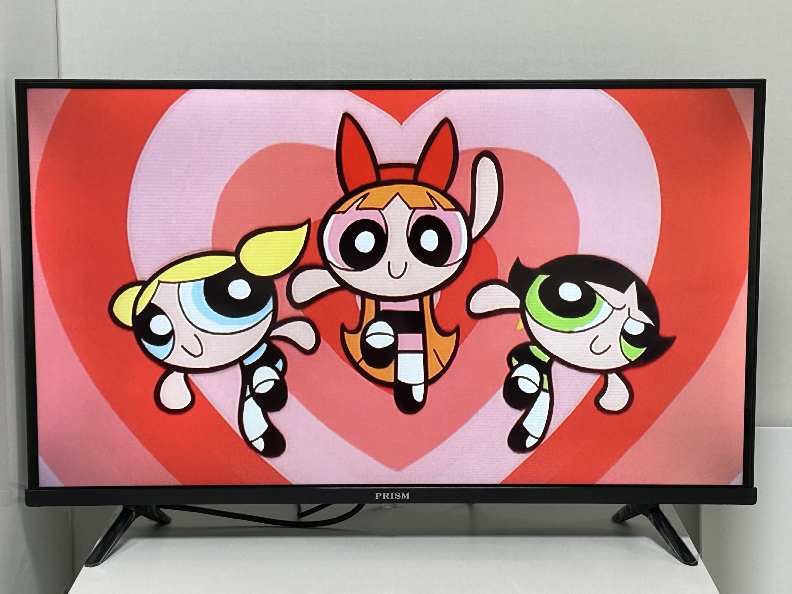
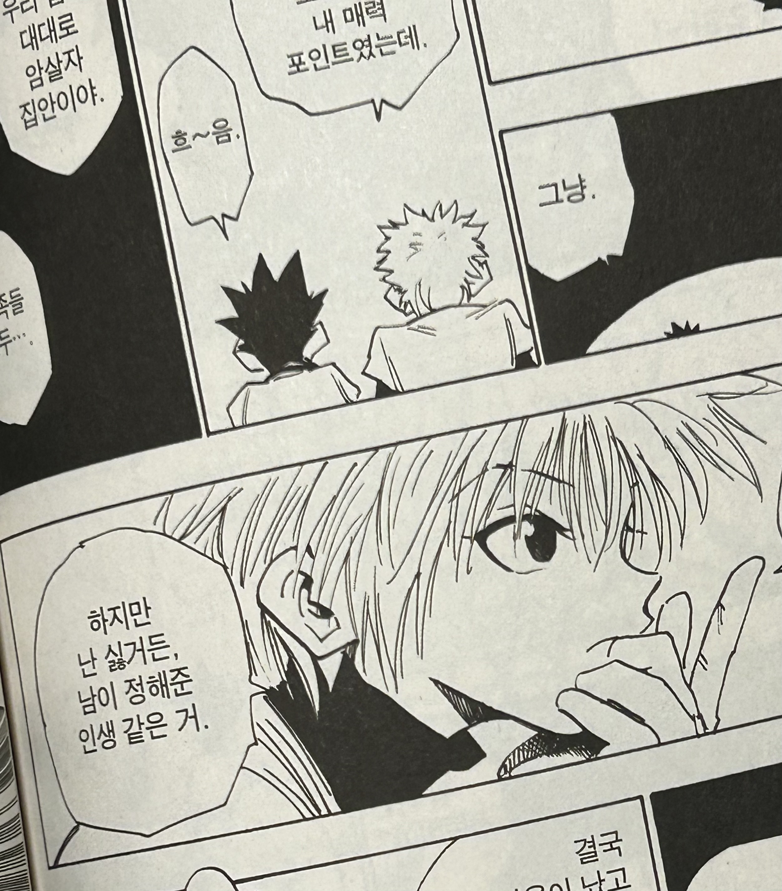

지하철 광고
지하철을 타고 집에 가던 중 우연히 보게 된 천장에 달린 광고이다. 평소에는 관심도 없던 광고이지만 이날만은 유독 저 광고가 눈에 들어왔다. 믿어요 함께해요 우리 학교라고 적혀있는 광고인데 이유는 모르겠지만 폰트나 디자인에 대해 배우고 있는 입장에서 유심히 관찰하게 되었다. 학교를 다니는 학생이라 그런지 학교라는 글자를 더 유심히 보는 경향이 있는 것일지도 모르겠다는 생각이 들었다. 나중에 광고나 간판 디자인을 하게 된다면 저 지하철 광고를 보고 느낀 것처럼 광고를 보게 될 타깃을 정확하게 설정해보는 것이 효과적일 것이라고 생각했다.
고양이
미대에서 인문관 쪽으로 가는 길에 있는 동상에 고양이가 누워있다. 평소에 고양이를 워낙 좋아하기도 하고 고양이가 누워있는 모습이 너무 귀여워서 시선을 빼앗겨 고양이를 한참 동안 보다 갔다. 하얀 털과 주황색 털이 섞여있는 고양이다. 고양이는 따뜻한 곳을 좋아한다는데 따뜻한 날씨 덕분에 온도가 올라간 동상 표면에 누워있다고 생각했다. 또, 우리 학교에는 저 고양이 말고도 고양이가 엄청나게 많은데 그래서 학교를 다니면서 거의 매일같이 고양이를 볼 수 있는 게 정말 큰 장점이라고 생각한다. 밖에서 지내는데도 너무 깨끗하고 잘 정돈되어 있는 하얀 털이 신기했다.
동상

인문관 앞에 있는 사람 형상의 엄청나게 거대한 동상이다. 처음 봤을 때 너무 큰 크기에 깜짝 놀랐던 기억에 있다. 사람 앞에 돌기가 있는 어떰 다른 물체가 놓여있는 것을 보니 어떤 것을 표현한 것인지 궁금하기도 하고 신기하기도 하다. 처음에는 가까이에서 본 동상이 압도감이 느껴지기도 하고 조금 무서웠는데 인문관을 지나갈 일이 자주 있어서 자꾸 보다 보니 이제는 익숙해졌다. 내가 그랬던 것처럼 동상을 처음 보면 놀랄 거라고 생각한다. 다른 건물 쪽으로 가본 적이 없어서 잘은 모르겠지만 저 동상이 크기도 너무 크고 근처의 건물에 트레이드 마크가 되어주는 것 같다.
자취방
자취방을 내 취향대로 꾸미고 일부를 찍은 사진이다. 가족들과 함께 살 때에는 내 방은 꾸밀 수 있어도 완전히 내 마음대로 하는 것에 한계가 있었지만 혼자 살다 보니 집 전체를 마음대로 할 수 있다는 게 즐겁고 기대된다. 처음으로 혼자 사니 초반에는 외롭고 슬퍼서 많이 힘들었지만 시간이 조금 지나고 집도 예쁘게 꾸미는 것이 너무 재미있게 느껴져서 적응이 되었다. 평소에도 인테리어에 관심이 있어서 관련 자료도 많이 찾아보고 꾸미는 것이 너무 좋아서 계속 집에 살면서 자취방을 온전한 내 취향으로 가득 채울 생각을 하니 즐거웠다. 방의 인테리어를 바꾸는 것이 나의 즐거움 중 하나이다.
강아지
길을 걷다가 우연히 지나치게 된 펫샵 안의 작은 강아지들이다. 강아지가 너무나도 작은 유리상자 안에서만 생활을 하는 것 같아 안타까운 마음이 들었다. 예전에 펫샵에 관해 들은 말이 떠올랐는데 펫샵에서는 사람들이 강아지를 사게 만들기 위해 최소한의 사료와 물만 제공하면서 강아지의 크기를 조그맣게 유지하고 작은 케이지 안에 가둬키운다는 말이다. 펫샵에서 강아지를 소중하게 대해주지 않는 게 이상했다. 펫샵에서 동물을 사면 안되고 입양해야 한다는 말이 공감됐다. 앞으로 펫샵의 강아지를 보고 마냥 귀여워할 수는 없을 것 같다. 앞으로 좀 더 이 문제에 관해 관심을 가져야겠다.
오리
학교에서 듣는 수업 중 2d 그래픽스 시간의 쉬는 시간에 친구가 만든 오리이다. 수업 시간에는 패턴이나 문양 만드는 것을 배우는데 친구가 배운 것을 활용해서 자신만의 캐릭터를 만든 것이 굉장히 눈에 띄었다. 엄청나게 짧은 시간 안에 만든 캐릭터인데도 너무 귀여운 오리를 만든 것이 신기했다. 그냥 지나칠 수도 있었겠지만 친구가 수업 시간을 활용해서 배운 툴로 혼자서 자신만의 캐릭터를 만든 것이 배울만한 점이라는 생각이 들었다. 나도 수업 시간에 배운 것을 이용해 혼자서 한 번 더 복습해 보면 훨씬 더 기억에도 잘 남을 수 있을 것이다.
텔레비전
원래는 가족들과 함께 살던 집에서는 텔레비전을 거의 보지 않았는데 자취방에서는 혼자 있다 보니 텔레비전을 자주 보게 된다. 어느 날 텔레비전에 어릴 때 좋아하던 만화가 나오고 있는 것을 보고 어린 시절에 만화를 많이 보던 추억이 떠올랐다. 나는 아직도 여전히 어린 시절에 보던 만화를 아주 좋아하고 자주 찾아보기한다. 어린아이들이나 보는 만화를 좋아한다고 유치하게 생각하는 사람도 있지만 어릴 때 봤던 기억이 조금씩 떠오르는 게 재미있다. 또한 만화를 보면 만화에 대한 기억뿐만 아니라 그 만화를 보던 때의 기억도 함께 떠오르는 점 때문에도 보게 된다.
민들레

전에 베란다의 열어둔 창문을 통해 민들레 홀씨가 집안으로 바람을 타고 들어와 민들레 홀씨를 치우며 짜증 나 한 적이 있다. 학교 가는 길에 집 앞에서 민들레 홀씨 하나와 그 근처에 피어있는 많은 민들레들을 보았다. 집 안에 들어왔을 때는 짜증 났지만 꽃을 피우기 위해 홀씨를 날려보내 꽃을 피우는 것을 생각하니 짜증을 낸 것이 조금 부끄럽게 느껴졌다. 예쁘게 꽃피운 민들레를 보니 홀씨가 날아가서 꽃으로 자라나 노란 꽃을 피우기까지의 시간이 얼마나 걸렸을지 궁금해지기도 했다. 평소에 생화를 좋아하지 않는다고 생각해 몰랐는데 나는 생화도 꽤나 좋아하는 것 같다.
만화책
가장 좋아하는 만화책을 보다 인상 깊은 장면을 찍었다. 만화의 대사일 뿐인데 대사가 이상하게 마음에 와닿았다. 남이 정해준 인생은 싫다는 대사를 읽으며 나도 남이 정해준 인생을 살고 있는 것은 아닐까 하는 생각이 들었다. 또한 나만의 인생을 개척하고 싶다는 생각도 들었다. 이렇게 별거 아닌 것으로 생각하면 그냥 넘길 수도 있는 일상 속 사소한 것에서 이상하게 유독 눈에 띄는 것을 통해 깊은 고민을 하게 될 수도 있다는 것을 평소에 마음속에 새기고 주변을 관찰하며 다니기로 다짐했다. 그렇게 한다면 일상 속에서도 좋은 고민거리를 이끌어 낼 수 있을 것 같다.
그림

고등학교 동안 입시를 하던 입시 미술 학원에서 아르바이트를 하던 중 선생님께서 그리고 계시던 그림이다. 장미꽃과 향수병을 그린 그림인데 선생님께서는 마음에 들지 않는다고 말씀하셨지만 나는 이 그림에 완전히 시선을 사로잡혀 몇 분이나 그림을 보고 있었다. 배경이 굉장히 마음에 들고 쨍한 색감도 예뻐 보였다. 학원에서 아르바이트를 하며 입시 때 그리던 그림을 다시 보니 고등학교 때 기억이 잘 떠올랐다. 그림을 멈추면 손이 굳는다고 해서 열심히 한 것이 없어지는 것 같아 아쉬웠는데 아르바이트를 통해 그림을 그리고 계속 볼 수 있다는 점이 좋다.
돌아가기